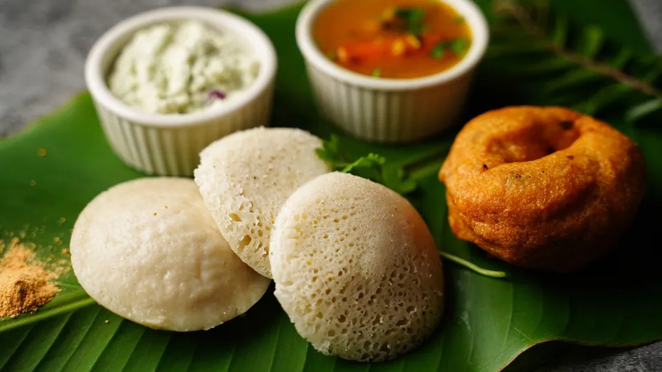
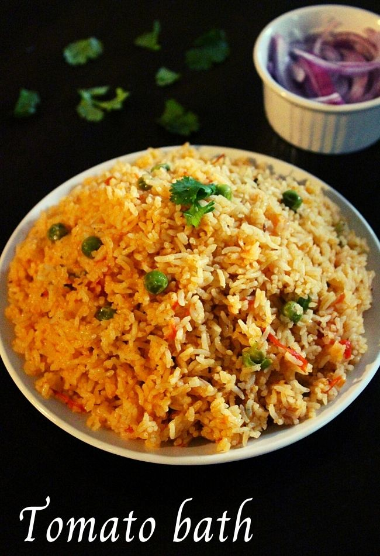

Explore the south indian foods

Idli or idly (/ɪdliː/ ⓘ) (plural: idlis) is a type of savoury rice cake, originating from South India, popular as a breakfast food in Southern India and in Sri Lanka. The cakes are made by steaming a batter consisting of fermented black lentils (de-husked) and rice. The fermentation process breaks down the starches so that they are more readily metabolised by the body.
Idli has several variations, including rava idli, which is made from semolina. Regional variants include sanna of Konkan.
A precursor of the modern idli is mentioned in several ancient Indian works. Vaddaradhane, a 920 CE Kannada language work by Shivakotiacharya mentions "iddalige", prepared only from a black gram batter. Chavundaraya II, the author of the earliest available Kannada encyclopedia, Lokopakara (c.1025 CE), describes the preparation of this food by soaking black gram in buttermilk, ground to a fine paste, and mixed with the clear water of curd and spices.[1] The Western Chalukya king and scholar Someshwara III, reigning in the area now called Karnataka, included an idli recipe in his encyclopedia, Manasollasa (1130 CE). This Sanskrit-language work describes the food as iḍḍarikā. In Karnataka, the Idli in 1235 CE is described as being "light, like coins of high value", which is not suggestive of a rice base.[2] The food prepared using this recipe is now called uddina idli in Karnataka.

A dosa is a thin savory crepe[citation needed] in South Indian cuisine made from a fermented batter of ground black lentils and rice. Dosas are served hot, often with chutney and sambar. Dosa is a signature dish in South India and Sri Lanka, and is popularly served in their respective restaurants around the world.
Dosas originated in South India, but its precise geographical origins are unknown. According to food historian K. T. Achaya, references in the Sangam literature suggest that dosa was already in use in the ancient Tamil country around the 1st century CE.[1] However, according to historian P. Thankappan Nair, dosa originated in the town of Udupi in present-day Karnataka.[2][3] Achaya also states that the earliest written mention of dosa appears in literature of present-day Tamil Nadu, in the 8th century, while the earliest mention of dosa in the Kannada literature appears a century later.[4]
In popular tradition, the origin of the dosa is linked to Udupi, probably because of the dish's association with Udupi restaurants.[4] The tamil dosai is softer and thicker earlier and the thinner and crispier version of dosa was first made in present-day Tamilnadu.[5] A recipe for dosa can be found in Manasollasa, a 12th-century Sanskrit encyclopedia compiled by Someshvara III, who ruled from present-day Karnataka.[6]

The humble South Indian thali, may not be as glamorous or calorie-loaded as its North Indian counterpart, but it sure can make lunchtime very special. In legendary and little-known establishments around town, the South Indian thali (also lovingly called meals) offers a filling option to hungry customers. And in almost every instance it celebrates local produce – whether you choose the soft jowar roti or the vegetables cooked in generous amounts of coconut. LBB plates up the best South Indian thalis in Bangalore.
The simplicity of South Indian flavours come alive at this popular eatery. Choose any of their meal options and the banana leaves will come out, followed by mounds of rice, and ladles full of spicy sambhar. It will be accompanied by bowls full of avial (a milky, vegetable stew), two other vegetable preparations that are dressed up in spice and coconut, rasam, buttermilk, and thick curd.
Nothing will prepare you for the onslaught at this legendary eatery. Your really large thali will struggle to contain the awesomeness they pile on. Bisi Bele Bath comes first, after which, the vegetable dishes come trooping in and so do the sambhar rice, sweets, and fruit salad.
A highway eatery that has Bengaluru flocking in for its many South Indian treats, the thali offerings are plenty here.

Rice bath recipe | karnataka style vegetable rice bath | rice bhath recipe with detailed photo and video recipe. a unique way of making a flavoured and tasty rice pulao recipe. it is made similar to any other traditional rice-based pulao or pilaf recipe but has an extra hint of flavours with a combination of the masala paste. it is an ideal breakfast and lunch box recipe when served with onion and tomato raita or with any dal recipes.
as i mentioned previously there are many variations to the pulao or bath recipes and this rice bath recipe is one such variation from karnataka. having said that this pulao is not something made and prepared in common households. it is typically made in small hotels and canteens and served for morning breakfast. it is perhaps one of the common rice based breakfast which is served with yoghurt based raita or even with coconut based vegetable kurma. my personal preference is the combination of onion and tomato raita which makes it an ideal combination with this spice loaded rice recipe. it not only adds the sour taste to the rice combo but also lowers the spice heat making it a nice side dish.